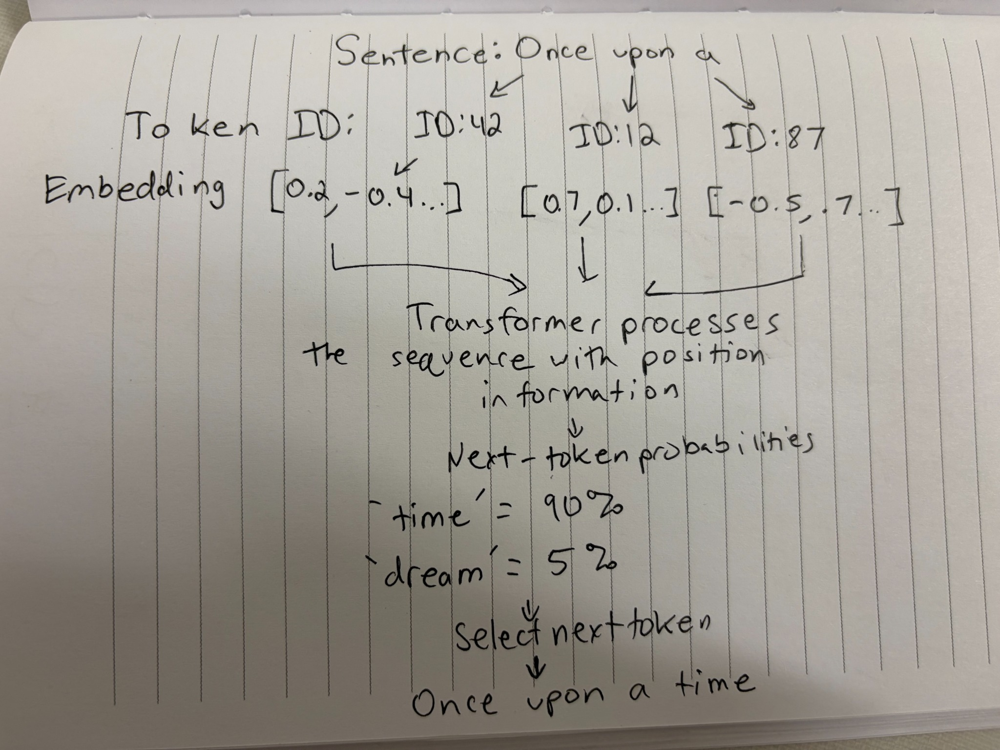

We are building an efficient transformer language model for Reef, Longhorn Silicon’s first chip, which extends Google’s Coral NPU. Its intended task is to generate children’s stories, so we can tailor the hardware and model to this specific workload.
We train our model on TinyStories, a dataset of short, simple stories. This gives us training text that matches what we want the chip to generate.
Our challenge is to generate coherent stories within Reef’s limited memory and data bandwidth. This means two things for the model: reduce hardware cost and preserve story quality.
How the model generates text
A token is a piece of text, such as a word, part of a word, or punctuation. A tokenizer splits text into these pieces and assigns each one an integer ID.
The task is next-token prediction: given some text, predict the token that follows. Generation starts with a prompt, such as “Once upon a.”
Here is the simple flow. Text becomes token IDs. Each ID selects an embedding—a list of learned numbers representing a token. The transformer processes those embeddings and predicts probabilities for the next token.


For example, given:
Once upon a ___
the model might assign a high probability to a token representing “time.” We select a token, add it to the text, and repeat to build a story.
During training, we compare its predictions with the actual next tokens and adjust its parameters so its predictions improve. The tokenizer defines the pieces and their IDs. Model training learns how to represent and predict those pieces.
The tokenizer
Common approaches split text into whole words, individual characters, or smaller-than-word pieces. Whole-word tokenization needs a way to handle unfamiliar words. Using individual characters or bytes produces longer sequences. Subword tokenization offers a useful middle ground.
We use byte-level Byte Pair Encoding, or BPE. It starts with all 256 possible bytes and repeatedly combines frequent neighboring pieces into larger tokens. Common patterns can use fewer tokens, while smaller pieces remain available for unfamiliar text.

With our tokenizer, we turn the TinyStories text into token IDs. We then choose a starting model design and train it to predict the next token. This becomes our baseline, and we compare other versions to see whether our changes help.
A larger vocabulary gives the model more text pieces to choose from, but it must store a list of learned numbers for every piece. A larger vocabulary therefore requires more memory. A smaller vocabulary saves memory, but may split the same story into more tokens. We want to find how much we can shrink the vocabulary while maintaining prediction quality.
One design choice at a time
A working model is not automatically an efficient model for Reef. We still need to decide how large the vocabulary should be (vocabulary-size ablations), how much computation the transformer should require (architecture ablations), and which numerical precisions it can tolerate (quantization ablations).
Smaller vocabularies reduce embedding storage but can require more tokens per story. Fewer bits per value—INT4 instead of INT8, for example—can reduce storage but hurt predictions.
We use ablation studies to measure these tradeoffs. For our initial comparisons, we start with a baseline model, change one design choice, and keep the other settings fixed. Changing several things together would make it harder to tell which change caused the result.
Our experiment plan is:
- Compare six BPE vocabulary sizes using the same starting model design.
- Select a vocabulary based on prediction quality and memory use.
- Keep that tokenizer fixed while studying other variables separately.
Testing all X other model configurations with all six vocabularies would take roughly 6X runs. Selecting the vocabulary first reduces that to approximately 6 + X runs. With 30 other configurations, that means about 36 runs instead of 180.
This describes the planned search strategy. Choices can interact, so promising combinations need validation. The separately reported precision study uses its own 50k-token baseline.
Choosing our BPE vocabulary size
All our candidates use BPE. We compare vocabularies containing 50,000, 25,000, 16,000, 12,000, 8,000, and 4,000 entries. Each entry represents a piece of text, such as a word or part of a word.
We train the largest vocabulary once and create smaller versions by stopping its combining process earlier. For each vocabulary, we train a model from the beginning using the same model design and training text. We repeat training because the model needs to learn the particular text pieces defined by its tokenizer.
For example, the 50k tokenizer might represent “elephant” as one token, while the 4k tokenizer might split it into several pieces. This is an illustration, not a measured token split. Each model must learn to predict the pieces its tokenizer uses.
After training, we test each model on text it did not train on. We measure how well it predicts that text and how much memory it needs.
The study keeps the amount of training text approximately fixed. Smaller vocabularies may need more training tokens to cover that text. The core transformer has about 25.2M non-embedding parameters; total parameters change with vocabulary size. The roughly 28M figure is a target, not the size of every run.
Measuring prediction quality
We check how much probability the model assigned to each actual next token. Assigning it a high probability earns a small penalty, while assigning it a low probability earns a large penalty. We add these penalties, measured in bits, and divide by the number of bytes in the evaluated text.
This gives us bits per byte, or BPB. Using bytes lets us compare tokenizers that split the same text into different numbers of tokens. Lower is better.
Text: “The cat ___”
Actual next token: “ sleeps”
−log₂(0.50) = 1
−log₂(0.25) = 2
Repeat for the evaluated text, add the penalties, then divide by text bytes. A total of 50 bits over 100 bytes gives 0.50 BPB.
Results
A large vocabulary was not necessary to maintain similar prediction quality on TinyStories. Here are the reported results:
| Vocabulary | BPB ↓ | Est. memory | Total parameters |
|---|---|---|---|
| 50k | 0.4828 | 56.0 MB | 51.0M |
| 25k | 0.4831 | 43.2 MB | 38.2M |
| 16k BEST BPB | 0.4822 | 38.6 MB | 33.6M |
| 12k | 0.4841 | 36.6 MB | 31.6M |
| 8k | 0.4858 | 34.5 MB | 29.5M |
| 4k | 0.4918 | 32.5 MB | 27.5M |
Reducing the vocabulary from 50k to 16k lowered estimated memory use from 56.0 MB to 38.6 MB, saving 17.4 MB (31%), while achieving a slightly better prediction score in this experiment.
Reducing it to 4k lowered estimated memory use to 32.5 MB, saving 23.5 MB (42%) compared with 50k using the displayed rounded values. BPB increased from 0.4828 to 0.4918, a small decline in prediction quality. Remember: lower BPB means the model is less surprised by the actual next tokens.
Memory estimates include weights, embeddings, and the KV cache at a 512-token context under the reported INT8 accounting. They are not on-chip SRAM requirements or measured Reef latency. The source’s savings use unrounded values, which can differ slightly from subtracting the displayed values.
The 16k run has the best observed BPB, while 4k uses the least memory. The small score differences are observations from these runs, not evidence of a universal winner. A smaller vocabulary can require more prediction steps per story, so memory savings alone do not establish faster story generation.
Same prompt, six vocabularies
Switch between the saved samples to see what each model generated. Every sample starts with “Once upon a time”.
VOCABULARY SIZE
Saved examples from the report, not live model output. Samples use full precision; table BPB uses INT8. Seed 0, temperature 0.7, top-k 50, and 150 generated tokens. Smaller vocabularies can cover less text in that budget, and samples may end mid-sentence. Individual stories illustrate behavior; they do not establish overall quality.
Source notes
The numbers and unedited story samples come from the Bevotron experiment report. Training data: TinyStories. Drawings by me.